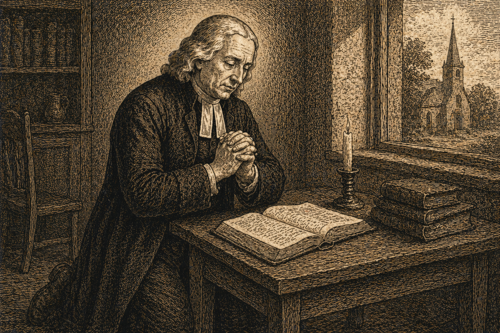

Проповідь 43 - Біблійний шлях спасіння
Переклад проповіді "The Scripture Way Of Salvation".
Проповідь 43 - Біблійний шлях спасіння

Біблійний шлях спасіння
«Бо спасені ви благодаттю через віру» (Ефесян 2:8).
-
Ніщо не здається таким заплутаним, складним і важким для розуміння, як релігія в тому вигляді, в якому її часто змальовували. І це стосується не лише релігії язичників, навіть серед наймудріших із них, але й релігії тих, кого в певному сенсі вважали християнами, зокрема людей із великим ім’ям у християнському світі, тих, кого сприймали як його опору. Але справжня релігія Ісуса Христа є легкою для розуміння, ясною й простою, якщо приймати її в природному вигляді, саме так, як вона викладена в Писанні. Мудрий Творець і Правитель світу пристосував її до слабкого розуміння та обмеженої здатності людини в її теперішньому стані. Це добре видно і в меті, яку вона ставить, і в засобі, яким веде до цієї мети. Мета, якщо сказати одним словом, це спасіння. Засіб досягти її, віра.
-
Легко помітити, що ці два короткі слова — віра і спасіння — включають у себе суть усього Біблійного вчення, «серцевину» всього Писання. Тому тим більше ми повинні докладати всіх зусиль, щоб уникнути помилок у їх розумінні і сформувати правильне та точне судження про кожне з них.
-
Отже, давайте серйозно запитаємо:
I. Що таке спасіння?
II. Що таке віра, через яку ми спасаємося?
III. Як ми спасаємося через віру?
I. Що таке спасіння?
-
Насамперед запитаємо, що таке спасіння? Спасіння, про яке йдеться тут, не те, що часто розуміється під цим словом, як-от «потрапляння до неба», вічне щастя. Це не подорож душі до раю, який названий Господом «лоно Авраамове». Це не благословення, яке очікує нас по той бік смерті, чи, як ми зазвичай говоримо, у «тому світі». Слова самого тексту розв’язують усі сумніви: «Спасенні ви». Це не щось віддалене: це теперішня річ, благословення, яке, через арм дану милість Божу, ви вже маєте зараз. Більше того, ці слова можна перекласти як «Ви вже спаслися». Таким чином, спасіння, про яке йдеться, охоплює всю працю Божу, від перших променів благодаті в душі до її завершення у славі.
-
Якщо розуміти це якнайширше, то сюди входить усе те, що відбувається в душі через те, що часто називають «природним сумлінням», але точніше було б назвати «передуючою благодаттю». Сюди входить усяке заклик Отця, усі прагнення до Бога, які, якщо ви їм піддаєтеся, дедалі зростають. Сюди входить і те світло, яким Син Божий «просвічує кожного, хто приходить у світ», навчаючи кожну людину «чинити справедливо, любити милосердя і ходити покірно зі своїм Богом». Сюди ж належать і докори сумління, які Його Дух час від часу пробуджує в кожній людині, хоч більшість намагається заглушити їх якомога швидше, а згодом або забуває про них, або принаймні заперечує, що колись узагалі їх мала.
-
Але зараз нас цікавить тільки те спасіння, про яке апостол говорить безпосередньо. І воно складається з двох загальних частин: виправдання і освячення.
Виправдання — це інше слово для позначення прощення. Це прощення всіх наших гріхів і, як наслідок, наше прийняття Богом. Ціна, якою це було здобуто для нас (зазвичай її називають «заслугою нашого виправдання»), — це кров і праведність Христа; або, щоб висловитися більш чітко, все, що Христос зробив і зазнав за нас, аж до того, як Він «вилив душу Свою за злочинців». Безпосередні наслідки виправдання — це мир Божий, «мир, який перевищує всяке розуміння», і «радість у надії на славу Божу» з «несказанною і славною радістю».
-
І водночас із виправданням, так, у цей самий момент, починається освячення. У цю мить ми народжуємося знову, народжуємося згори, народжуємося від Духа. Це реальна, а не лише відносна зміна. Ми внутрішньо оновлюємося силою Божою. Ми відчуваємо, як «любов Божа влита в наші серця Духом Святим, який даний нам”. Це породжує любов до всього людства, і особливо до дітей Божих; викорінює любов до світу, до задоволень, до спокою, до пошани, до грошей, а також гордість, гнів, самолюбство та будь-який інший злий нахил. Одним словом, це змінює земний, чуттєвий і диявольський розум на «розум, що був у Христі Ісусі».
-
Як природно людям, які пережили таку переміну, думати, що гріх у них уже повністю зник, що він повністю викорінений із їхнього серця і більше не має жодного місця в ньому! Як легко вони роблять висновок: «Я не відчуваю гріха, отже, його немає; він не рухається, отже, він не існує; немає його дії, отже, немає його буття!»
-
Але зазвичай недовго триває це переконання, бо незабаром вони усвідомлюють, що гріх лише був тимчасово придушений, а не знищений. Спокуси повертаються, і гріх оживає, показуючи, що він лише був уражений, але не мертвий. Тепер вони відчувають у собі дві протилежні сили: «тіло бажає противного Духу», природа протистоїть Божій благодаті. Вони не можуть заперечувати, що, хоча вони все ще мають силу вірити в Христа і любити Бога, і хоча Його «Дух» все ще «свідчить разом із їхнім духом, що вони діти Божі», вони іноді відчувають у собі гордість чи самолюбство, гнів чи невір’я. Вони бачать, як ці сили час від часу пробуджуються в їхньому серці, хоча й не перемагають; можливо, навіть «сильно тиснуть на них, щоб вони впали», але Господь є їхньою допомогою.
-
Як точно Макарій, який жив чотирнадцять століть тому, описав сучасний досвід дітей Божих: «Невмілі» або недосвідчені, «коли благодать діє, одразу уявляють, що вони більше не мають гріха. Тоді як ті, хто має розсудливість, не можуть заперечувати, що навіть ті, хто має Божу благодать, можуть бути знову атаковані гріхом. Ми неодноразово бачили серед братів тих, хто відчував таку благодать, і стверджували, що вони більше не мають гріха; але, зрештою, коли вони думали, що цілком звільнилися від нього, прихована в них розбещеність знову пробуджувалась, і вони були майже знищені нею».
-
З моменту нашого нового народження розпочинається поступова робота освячення. Ми отримуємо силу від Духа «умертвляти діла тіла», тобто нашу гріховну природу; і чим більше ми мертві для гріха, тим більше ми живі для Бога. Ми зростаємо від благодаті до благодаті, поки старанно уникаємо «всякої появи зла» і є«ревними до добрих справ», коли маємо можливість, роблячи добро всім людям; поки дотримуємося всіх Його постанов бездоганно, поклоняючись Йому «в дусі та істині»; поки беремо свій хрест і зрікаємося кожної насолоди, яка не веде нас до Бога.
-
Таким чином, ми очікуємо повного освячення; повного спасіння від усіх наших гріхів — від гордості, самолюбства, гніву, невір’я, або, як це висловлює апостол, «переходимо до досконалості». Але що таке досконалість? Це слово має різні значення: тут воно означає досконалу любов. Це така любов, що не залишає місця для гріха. Вона повністю наповнює серце й охоплює всю душу. Це любов, яка «завжди радіє, невпинно молиться і за все дякує».
II. Але що таке віра, через яку ми спасаємося?
-
Віра, загалом, визначається апостолом як «доказ того, чого не бачимо». Це свідчення, божественне свідчення і переконання (слово означає обидва ці поняття) у речах невидимих; тих, які не видно, не сприймається ні зором, ні будь-якими іншими зовнішніми почуттями. Вона включає як надприродне свідчення про Бога і про речі Божі, так і свого роду духовне світло, яке відкривається душі, та надприродне сприйняття цього світла. Згідно з Писанням, Бог іноді дає це світло, а іноді силу для його розпізнавання. Як сказав апостол Павло: «Бог, що сказав: «Хай засяє світло із темряви», засяяв у наших серцях, щоб просвітити нас знанням слави Божої в лиці Ісуса Христа». А також: «Просвіти очі серця вашого». Через цей подвійний вплив Святого Духа, відкриваючи й освітлюючи очі нашої душі, ми бачимо те, чого «око не бачило, вухо не чуло». Ми отримуємо видіння невидимого світу Божого, який оточує нас, але не сприймається нашими природними здібностями, ніби його не існує. Ми також бачимо вічний світ, проникаючи крізь завісу, яка відділяє час від вічності. Хмари і темрява більше не покривають його, і ми вже зараз споглядаємо славу, яка має бути явлена.
-
У більш конкретному сенсі, віра — це божественне свідчення і переконання не лише в тому, що «Бог був у Христі, примирюючи світ із Собою”, але також у тому, що Христос любив мене і віддав Себе за мене. Саме цією вірою (чи назвемо ми це сутністю віри, чи її властивістю) ми приймаємо Христа; ми приймаємо Його у всіх Його служіннях — як нашого Пророка, Священика і Царя. Саме через цю віру Він стає для нас «мудрістю, і праведністю, і освяченням, і викупленням».
-
«Але чи є це віра впевненості чи віра прихильності?» Святе Письмо не згадує такого розрізнення. Апостол говорить: «Є одна віра і одна надія вашого покликання»; одна християнська, спасаюча віра, «як є один Господь», в якого ми віримо, і «один Бог і Отець усіх». І це очевидно, що ця віра обов’язково включає впевненість (яка тут лише інше слово для свідчення, оскільки різниця між ними важко зрозуміти), що Христос любив мене і віддав Себе за мене. Бо «хто вірить» із справжньою живою вірою, «має свідчення в собі самому»: «Дух свідчить разом із його духом, що він — дитина Божа». «Бо ви сини, тому Бог послав у ваші серця Духа Свого Сина, що кличе: Авва, Отче», даючи вам впевненість, що ви діти Божі, і дитячу довіру до Нього. Але слід зауважити, що за самою природою речей ця впевненість передує довірі. Адже людина не може мати дитячої довіри до Бога, поки не усвідомлює, що вона є дитиною Божою. Отже, довіра, уповання, прихильність чи як би це ще не назвали, є не першим, як деякі вважали, а другим аспектом або дією віри.
-
Цією вірою ми спасаємося, виправдовуємося і освячуємося, якщо брати це слово в його найвищому значенні. Але як ми виправдовуємося і освячуємося вірою? Це є наше наступне питання, і воно має неабияке значення, тому варто розглянути його більш детально та конкретно.
III. Як ми виправдовуємося вірою?
-
По-перше, як ми виправдовуємося вірою? У якому сенсі це потрібно розуміти? Я відповідаю: віра є умовою, і єдиною умовою виправдання. Вона є умовою: ніхто не виправданий, якщо не вірить; без віри ніхто не може бути виправданий. І вона є єдиною умовою: цього достатньо для виправдання. Кожен, хто вірить, виправданий, незалежно від усього іншого, що він має чи не має. Іншими словами, жодна людина не виправдана, поки не повірить; кожна людина, яка вірить, є виправданою.
-
«Але хіба Бог не наказує нам також каятися? Так, і приносити плоди, достойні покаяння, — наприклад, припинити чинити зло і навчитися робити добро. І хіба обидві ці речі не є вкрай необхідними, настільки, що якщо ми свідомо нехтуємо ними, ми не можемо розраховувати на виправдання? Але якщо це так, як можна сказати, що віра є єдиною умовою виправдання?” Бог дійсно наказує нам і каятися, і приносити плоди, достойні покаяння; і якщо ми свідомо нехтуємо цим, ми не можемо очікувати виправдання. Таким чином, і покаяння, і плоди покаяння в певному сенсі необхідні для виправдання. Але вони не є необхідними в тому ж сенсі, що й віра, і не в тій же мірі. Не в тій же мірі, бо ці плоди необхідні лише за певних умов: якщо є час і можливість для їх виконання. Інакше людина може бути виправдана і без них, як це було з розбійником на хресті (якщо тільки він дійсно був розбійником, адже деякі останнім часом доводили, що це була чесна і поважна людина). Але вона не може бути виправдана без віри; це неможливо. І навпаки, хай би у людини було скільки завгодно покаяння або плодів, достойних покаяння, це їй нічого не допоможе; вона не буде виправдана, доки не повірить. Але в той самий момент, коли вона вірить — з плодами чи без них, з більшим чи меншим покаянням — вона виправдана. Не в тому ж сенсі, бо покаяння і його плоди є лише опосередковано необхідними; необхідними для віри, тоді як віра є безпосередньо необхідною для виправдання. Таким чином, віра залишається єдиною умовою, яка є безпосередньо та найближче необхідною для виправдання.
-
«А чи вірите ви, що ми освячуємося вірою? Ми знаємо, що ви вірите, що ми виправдовуємося вірою; але хіба ви не вірите, і відповідно не навчаєте, що ми освячуємося нашими ділами?” Це твердження було багато разів висловлене протягом останніх двадцяти п’яти років, але я постійно заявляв протилежне у всіх можливих формах. Я завжди свідчив, як у приватних розмовах, так і публічно, що ми освячуємося, як і виправдовуємося, вірою. І справді, одна з цих великих істин надзвичайно яскраво висвітлює іншу. Так само, як ми виправдовуємося вірою, ми й освячуємося вірою. Віра є умовою, і єдиною умовою освячення, так само як і виправдання. Вона є умовою: ніхто не освячується, якщо не вірить; без віри ніхто не може бути освяченим. І вона є єдиною умовою: цього достатньо для освячення. Кожен, хто вірить, освячується, незалежно від усього іншого, що він має чи не має. Іншими словами, жодна людина не освячується, доки не повірить; кожна людина, яка вірить, освячується.
-
«Але хіба немає покаяння, яке йде вже після виправдання, так само як є покаяння, що передує виправданню? І хіба всі виправдані не зобов’язані бути «ревними до добрих діл»? Так, чи не настільки це потрібне, що коли людина свідомо цим нехтує, вона не має підстав сподіватися, що колись буде освячена повністю, тобто доведена до досконалості в любові? Чи зможе вона тоді зростати в благодаті й у люблячому пізнанні Господа нашого Ісуса Христа? Чи зможе вона взагалі зберегти благодать, яку Бог уже дав? Чи зможе залишатися у вірі, яку отримала, і в Божій прихильності? Хіба ви самі цього не визнаєте і не повторюєте постійно? Якщо так, то як можна говорити, що віра є єдиною умовою освячення?»
-
Так, я дозволяю все це і постійно стверджую як істину Божу. Я визнаю, що існує покаяння, яке є наслідком виправдання, а також покаяння, яке передує виправданню. Ті, хто виправданий, зобов’язані бути ревними до добрих справ. І ці добрі справи є настільки необхідними, що якщо людина свідомо нехтує ними, вона не може розраховувати на освячення; вона не може зростати в благодаті, у Божому образі, у розумі, який був у Христі Ісусі. Ба більше, вона не може зберегти ту благодать, яку отримала; не може залишатися у вірі чи Божій милості. Який же висновок ми маємо зробити з цього? Тільки такий, що і покаяння, правильно зрозуміле, і виконання всіх добрих справ — справ побожності, а також справ милосердя (тепер правильно так званих, оскільки вони випливають із віри), є в певному сенсі необхідними для освячення.
-
Я кажу «покаяння, правильно зрозуміле», бо його не слід змішувати з попереднім покаянням. Покаяння, що приходить після виправдання, дуже відрізняється від того, яке передує йому. Воно не пов’язане з почуттям провини, з відчуттям засудження чи з усвідомленням Божого гніву. Воно також не припускає жодного сумніву в Божій прихильності й не містить у собі «страх, що мучить». Натомість це переконання, яке Святий Дух дає щодо гріха, що ще лишається в нашому серці, щодо jronhma sarkos, тілесного розуму, який, як каже наша Церква, «і далі залишається» навіть у відроджених, хоч уже не панує над ними й не має над ними влади. Це переконання щодо нашої схильності до зла, щодо серця, яке легко відхиляється й здатне на відступництво, щодо того, що плоть і далі прагне проти духа. Іноді, якщо ми не будемо безперестанку пильнувати й молитися, вона тягнутиме до гордості, іноді до гніву, іноді до любові до світу, до зручності, до честі або до насолоди більше, ніж до Бога. Це також переконання щодо нахилу нашого серця до сваволі, до атеїзму чи ідолопоклонства, а найбільше до невірства. Через нього тисячами способів і під тисячами приводів ми знов і знов відходимо, більшою чи меншою мірою, від Бога.
-
Разом із цим усвідомленням гріха, що ще лишається в серці, приходить і ясне усвідомлення гріха, який і далі проявляється в нашому житті та прилягає до наших слів і вчинків. Навіть у найкращому, що ми робимо, ми тепер помічаємо домішок зла, чи в намірі, чи в самій справі, чи в способі її виконання, щось таке, що не витримало би праведного Божого суду, якби Він строго зважував кожну нашу похибку. Там, де ми найменше цього чекали, ми знаходимо пляму гордості або сваволі, невірства або ідолопоклонства. Тому тепер ми інколи більше соромимося навіть своїх найкращих обов’язків, ніж колись соромилися найгірших гріхів. І через це ми не можемо не бачити, що в них немає нічого заслуговуючого, і що вони самі по собі не могли б устояти перед Божою справедливістю, так що й за них ми були б винні перед Богом, якби не кров завіту.
-
Досвід показує, що разом із усвідомленням гріха, який залишається в наших серцях, та гріха, що проникає у всі наші слова і дії, як і вини, яку ми понесли би через це, якби не були постійно очищені спокутною кров’ю, ще один елемент є включеним у це покаяння: усвідомлення нашого безсилля. Це відчуття нашої абсолютної нездатності навіть думати про щось добре, формувати хоча б одне добре бажання, а тим більше сказати хоча б одне правильне слово чи виконати добру дію без Божої вільної і всемогутньої благодаті, яка передує нам і супроводжує нас щомиті.
-
Які ж добрі справи необхідні для освячення? По-перше, усі справи побожності, такі як спільна молитва, молитва в сім’ї, особиста молитва; приймання вечері Господньої; вивчення Святого Письма через слухання, читання, роздуми; дотримання посту або утримання настільки, наскільки це дозволяє фізичне здоров’я.
-
По-друге, це всі справи милосердя, як для тіла, так і для душі. До них належить нагодувати голодного, одягнути нагого, прийняти подорожнього, відвідати того, хто у в’язниці, або хворого, або того, хто по-різному страждає. До них належить також прагнути навчати неуків, пробуджувати нерозумного грішника, оживляти духовно млявого, утверджувати того, хто хитається, утішати малодушних, підтримувати спокушуваних, а також будь-як сприяти тому, щоб душі були спасенні від смерти. Ось що тут мається на увазі під покаянням, і саме це є «плодами, гідними покаяння», які потрібні для повного освячення. Це є шлях, яким Бог призначив Своїм дітям очікувати повного спасіння.
-
Звідси видно, якою згубною може бути думка, що в віруючому вже немає жадного гріха, що гріх нібито знищується повністю, «з коренем і гілкою», в ту саму мить, коли людину виправдано. Адже така думка усуває потребу в подальшому покаянні, а тим самим перекриває шлях до освячення. Бо там, де людина переконана, що в її серці й у її житті вже немає гріха, не лишається місця для покаяння. А без цього покаяння немає і дороги до того, щоб бути удосконаленим у любові, хоча саме воно є необхідним для цього.
-
Звідси також видно, що, очікуючи повного спасіння, ми нічим не ризикуємо. Навіть якщо ми помиляємося, навіть якщо такого благословення ніколи не було або його неможливо досягти в цьому житті, ми все одно нічого не втрачаємо. Навпаки, сама ця надія спонукає нас якнайповніше використовувати всі дари, які Бог дав нам, і примножувати їх, щоб, коли Господь повернеться, Він знайшов Своє з прибутком.
-
Але повернемося до нашої теми. Хоча визнається, що і це покаяння, і його плоди необхідні для повного спасіння, вони все ж не є необхідними в тому ж сенсі чи в тій же мірі, що й віра. Не в тій же мірі, бо ці плоди є необхідними лише за певних умов: якщо є час і можливість для їх виконання. Інакше людина може бути освячена і без них. Але вона не може бути освячена без віри. Так само, хай би у людини було скільки завгодно покаяння або добрих справ, це їй нічого не допоможе: вона не буде освячена, доки не повірить. У той момент, коли вона вірить, з плодами чи без них, із більшим чи меншим покаянням, вона освячується. Не в тому ж сенсі, бо покаяння і його плоди є лише опосередковано необхідними для збереження віри, а також для її зростання; тоді як віра є безпосередньо необхідною для освячення. Таким чином, віра залишається єдиною умовою, яка є безпосередньо та найближче необхідною для освячення.
-
Але що таке та віра, якою ми освячуємося — звільняємося від гріха і досягаємо досконалої любові? Це божественне свідчення і переконання, по-перше, що Бог обіцяв це у Святому Письмі. Поки ми не будемо повністю переконані в цьому, неможливо зробити навіть крок вперед. І хіба потрібно щось більше, щоб переконати розумну людину в цьому, ніж давня обітниця: «Ось обіцяю вам, що обріжу серце ваше і серце ваших дітей, щоб любити Господа Бога вашого всім серцем вашим і всією душею вашою?» Як ясно це виражає ідею досконалої любові! Як сильно це припускає звільнення від усякого гріха!
-
Це божественне свідчення і переконання, по-друге, що те, що Бог обіцяв, Він спроможний виконати. Тож навіть якщо «людині неможливо” «очистити нечисте», очистити серце від усякого гріха й наповнити його святістю, це не створює жодних труднощів, бо «для Бога все можливе”. І, звичайно, ніхто ніколи не думав, що це можливо для будь-якої сили, окрім всемогутньої сили Бога. Але якщо Бог сказав, це буде зроблено. Бог каже: «Нехай буде світло!» — і є світло.
-
По-третє, це божественне свідчення і внутрішня певність, що Він може і хоче вчинити це вже тепер. І чому б ні? Хіба для Нього одна мить не те саме, що тисяча років? Йому не потрібен додатковий час, щоб звершити все, що відповідає Його волі. Так само Йому не потрібно чекати, доки ті, кого Він хоче вшанувати, стануть «достойнішими» або «підготовленішими». Тож ми можемо сміливо сказати будь-якої миті: «Нині день спасіння». «Сьогодні, коли почуєте Його голос, не робіть закам’янілими ваших сердець». «Ось, усе вже готове, приходьте на весілля!»
-
До цієї впевненості, що Бог може і хоче освятити нас зараз, потрібно додати ще одне: божественне свідчення і переконання, що Він це робить. У ту годину це здійснюється: Бог говорить до самої душі: «Нехай буде тобі за вірою твоєю!» Тоді душа очищена від усякого гріха; вона очищена «від усякої неправди». У цей момент віруючий переживає глибоке значення цих урочистих слів: «Якщо ходимо у світлі, як Він є у світлі, то маємо спільність один з одним, і кров Ісуса Христа, Його Сина, очищає нас від усякого гріха».
-
«Але чи чинить Бог цю велику працю в душі поступово, чи миттєво?» У декого вона, можливо, відбувається поступово, у тому сенсі, що людина не може назвати тієї точної миті, коли гріх уже перестав панувати. Але було б надзвичайно бажано, якби такою була Божа воля, щоб це сталося миттєво, щоб Господь знищив гріх «подихом Своїх уст» в одну мить, без зволікання. І найчастіше Він саме так і чинить. Це очевидний факт, і доказів цього досить, щоб переконати кожну неупереджену людину. Тож чекай цього щомиті. Чекай цього на тій дорозі, про яку йшлося вище, у всіх добрих ділах, до яких ти «знову створений у Христі Ісусі». У такому очікуванні немає небезпеки. Ти не станеш гіршим, навіть якщо поки що не станеш кращим. Бо навіть якби твоя надія не справдилася, ти все одно нічого не втратив би. Але вона справдиться. Це прийде і не забариться. Тож чекай цього щодня, щогодини, щомиті. Чому б ні? Хіба ти не можеш чекати цього вже тепер, цієї години, цієї миті? Звісно, можеш, якщо віриш, що це дається «вірою». І саме тут ти можеш напевно перевірити, чи шукаєш ти цього вірою, чи ділами. Якщо ти шукаєш цього ділами, ти хочеш, щоб спершу щось сталося, перш ніж ти будеш освячений. Ти думаєш: «Спершу я мушу стати таким то або зробити те чи інше». Отже, ти й досі шукаєш цього ділами. Але якщо ти шукаєш цього вірою, ти можеш чекати цього таким, яким ти є, і чекати цього тепер. Важливо побачити, що між цими трьома твердженнями є нерозривний зв’язок: чекати цього вірою, чекати цього таким, яким ти є, і чекати цього тепер. Відкинути одне означає відкинути всі. Прийняти одне означає прийняти всі. Чи віриш ти, що ми освячуємося вірою? Тоді будь вірний своєму принципові і чекай цього благословення саме таким, яким ти є, не кращим і не гіршим: як бідний грішник, який і досі «не має чим заплатити», не має чим виправдатися, окрім одного: «Христос помер». А якщо ти чекаєш цього таким, яким ти є, тоді чекай цього тепер. Не відкладай і не шукай ще якихось умов. Навіщо? Христос готовий, і Він є всім, чого ти потребуєш. Він чекає на тебе. Він біля дверей. Нехай найглибина твоєї душі вигукне:
Увійди, увійди, Небесний Гостю!
Не залишай мене знову.
Залишайся зі мною за цією трапезою,
і нехай вона стане трапезою вічної любові.